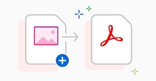

About Me
A brief introduction of myself and my background
Hi, I'm P.Sai Vinay,and I'm a student pursuing second year of B-tech. I'm passionate about getting into MAANG companies and I love to show my skills and talent. I hope you will enjoy reading my portfolio and get to know me better.
My Skills
A list of my skills and proficiencies
- Python
- HTML, CSS, Bootstrap
- C++
My Projects
A showcase of some of my projects and achievements
Project 1
The application consists of three main buttons, namely:
1. Select Images: This button opens a file dialog allowing the user to select multiple image files they want to convert to PDF.
2. Select PDF: This button opens a second file dialog box that allows the user to enter a name and choose the location for the resulting PDF file they will get after conversion.
3. Convert: This button invokes the conversion process and displays a success or an error message depending on the outcome of the program.
In crux, the code provides a simple and intuitive way for its users to convert multiple images into a single PDF File, without the help of manual conversions or external tools.
The code given above uses the Python Tkinter library. It is a GUI (Graphical User Interface) based program written in Python for the purpose of converting multiple images to a single PDF document.
As you can see, the program has three buttons with:
Select Images: This button helps to open a dialog box that allows us to select one or more image files of extensions such as JPG, JPEG, and PNG to be converted to PDF.
Select PDF: This button will open a save file dialog that will allow the user (you) to select the name and location of the PDF file you want to create.
Convert: This will call the "images_to_pdf" function, which takes the selected images and name of the PDF file as inputs and converts the images to a single PDF document.
The "images_to_pdf" function uses the PIL library. It first opens the first image to create a new PDF file with that image. It then appends the remaining images to the PDF file. The function is also invoked to display a success popup or an error message in case of a conversion failure.
Once the GUI is run, the user can interact with the buttons to select the images and PDF file, and then convert the images to a single PDF document.
Coming to the rest of the program:
1. The code starts with the 'tkinter' package, which is a very important package in Python. "Tkinter" is the main module in Python to create GUI applications.
2. 'filedialog': This provides a file selection dialog box whenever invoked to allow users to select images and specify the PDF file name and path.
3. 'messagebox': Provides a feedback message box to display success and error messages to the user.
4. 'PIL': This is an image processing library used to open and save image files.
Project 2
First, we installed the 'phonenumbers' package in our local system.
Next, we imported the installed package.
Later, we took input from the user as the mobile number and parsed it.
Then, we checked whether the mobile number is valid or not.
If the mobile number is valid, we extracted information about it and displayed it on the console.